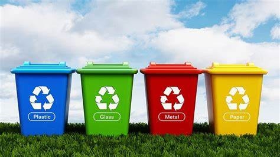
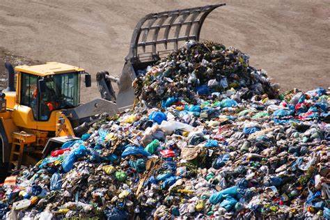
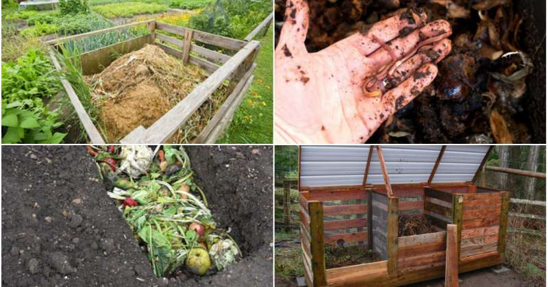

Waste management is essential in today’s society. Due to an increase in population, the generation of waste is getting doubled day by day. Moreover, the increase in waste is affecting the lives of many people.
For instance, people living in slums are very close to the waste disposal area. Therefore there are prone to various diseases. Hence, putting their lives in danger. In order to maintain a healthy life, proper hygiene and sanitation are necessary. Consequently, it is only possible with proper waste management.
Methods for Waste Management

2.Landfills– Landfills is the common method for waste management. The garbage gets buried in large pits in the ground and then covered by the layer of mud. As a result, the garbage gets decomposed inside the pits over the period of time.

3.Composting– Composting is the conversion of organic waste into fertilizers. It increases the fertility of the soil which result in helpful in more growth in plants. Furthermore it the useful conversion of waste management that is benefiting the environment.

Message